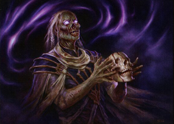

Whenever this creature or another Zombie you control dies, you draw a card and you lose 1 life.
“To see past the veil of death, cross it.” —The Red Book of Mezdrithalik
Undead Augur

Creature -- Zombie Wizard
Whenever this creature or another Zombie you control dies, you draw a card and you lose 1 life.
“To see past the veil of death, cross it.” —The Red Book of Mezdrithalik